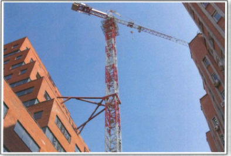

In September 2005, first-degree murder suspect Carl Rowland fled the U.S. state of Florida. Police investigators in Florida wanted to arrest Rowland because he was accused of strangling his girlfriend to death. Often criminals on the run will head to where they have family or friends in the hope that they will be able to get help evading police. From Florida, Carl Rowland headed north to Atlanta, Georgia where his sister lived.
After Rowland arrived in Atlanta, his behaviour became frenzied and erratic-likely because he knew police were on his trail. In his frenzied state, he pulled a knife on a small group of construction workers at a job site. Rowland demanded that he be allowed to go up the large 18-story crane situated on the construction site. Fearing for their lives, the workers allowed Rowland access to the crane and then contacted police.
When police arrived, Rowland had climbed to the top of the large crane. Police negotiators tried to convince Rowland to come down from the crane, but they were not successful. Finally, after more than two full days perched on the 18-story crane, police lured Rowland down to a lower position on the crane by promising him food and water. He got the food and water, but he also got a surprise. When he was at this lower position, a specially trained police officer shot him with a taser. The taser discharge immobilized Rowland, allowing police to subdue him successfully. After being captured by police, Rowland was lowered to an ambulance and taken to a local hospital. After his treatment, he was charged formally by police and extradited to Florida to face murder charges.